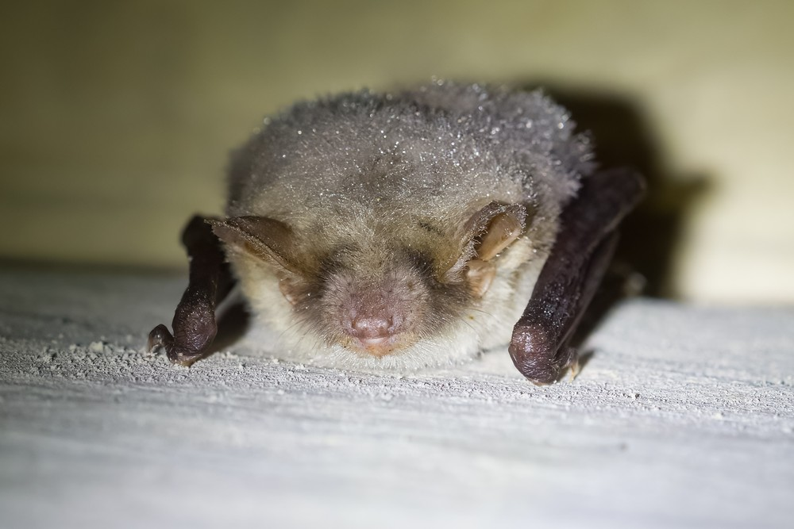

Soortgericht onderzoek
Vleermuisonderzoek
Blijkt uit uw quickscan dat vleermuizen niet zijn uit te sluiten? Dan is aanvullend vleermuisonderzoek nodig. Wij voeren dit uit door heel Nederland, volgens het Vleermuisprotocol.
Vrijblijvend overleggenStrikt beschermd, dus zorgvuldig onderzoek
Alle Nederlandse vleermuissoorten zijn strikt beschermd onder de Omgevingswet en de Europese Habitatrichtlijn. Niet alleen de dieren zelf, maar ook hun vaste rust- en verblijfplaatsen, vliegroutes en foerageergebieden.
Zonder gedegen onderzoek riskeert u boetes, bouwstops en juridische procedures. Met een tijdig en volledig onderzoek weet u waar u aan toe bent en voorkomt u vertraging later in het traject.

Wanneer is vleermuisonderzoek nodig?
Vleermuisonderzoek is nodig als een quickscan uitwijst dat vleermuizen mogelijk gebruikmaken van een gebouw, boom of gebied dat door uw plannen wordt beïnvloed. Denk aan situaties als deze.
Spouwmuur en isolatie
Het na-isoleren van een spouwmuur of dak sluit vaak verblijfplaatsen af waar vleermuizen zich ophouden.
Sloop en renovatie
Bij sloop of ingrijpende renovatie van gebouwen met geschikte spouw, dakpannen of houten gevels.
Kap van oude bomen
Holle bomen bieden verblijfplaatsen aan boombewonende soorten als rosse vleermuis en watervleermuis.
Nieuwe verlichting
Verlichting van een gebied dat als vliegroute of foerageergebied dient, kan die functie verstoren.
Zo voeren wij het onderzoek uit
Volgens het Vleermuisprotocol, de landelijke standaard die door alle bevoegde gezagen wordt gehanteerd.
-
Onderzoeksopzet
Op basis van de quickscan stellen we een plan van aanpak op dat voldoet aan het Vleermuisprotocol: het juiste aantal bezoeken, in de juiste periode, met de juiste methoden.
-
Veldbezoeken (meestal 5)
Afhankelijk van de functie van het gebouw voeren wij meestal vijf veldbezoeken uit tussen mei en oktober. Alleen wanneer aantoonbaar uitsluitend de gewone of ruige dwergvleermuis in beeld is, kunnen het er vier zijn. Bezoeken starten rond zonsondergang of in de vroege ochtend.
-
Data-analyse
Na elk bezoek analyseren we de geluidsopnames om de soorten te determineren. Vleermuisgeluiden zijn soortspecifiek, met de juiste apparatuur en expertise stellen we met grote zekerheid vast welke soorten aanwezig zijn.
-
Rapportage
Wij rapporteren welke soorten, verblijfplaatsen, vliegroutes en foerageergebieden aanwezig zijn en wat de impact van uw plannen is. Het rapport is direct bruikbaar voor een omgevingsvergunning flora- en fauna-activiteit (voorheen 'ontheffing').
Wanneer kan het onderzoek plaatsvinden?
Het Vleermuisprotocol onderscheidt verschillende typen verblijf, elk met een eigen periode. Een goede planning is essentieel: mist u het seizoen, dan loopt uw project al snel een jaar vertraging op.
Kraamverblijf
15 mei – 15 juliTwee bezoeken, met minimaal twee weken ertussen.
Zomerverblijf
15 mei – 15 septTwee bezoeken in de zomerperiode.
Paarverblijf
15 aug – 1 oktOnderzoek naar baltsende mannetjes en paarverblijven.
Winterverblijf
Dec – febAlleen als een verblijfplaats is aangetoond.
Heeft u haast? Wacht niet tot de zomer
De veldbezoeken starten al vanaf half mei. Hoe eerder u contact opneemt, hoe groter de kans dat het onderzoek nog dit seizoen kan worden afgerond en uw project niet vertraagt.
Welke soorten onderzoeken we?
In en om gebouwen komen vooral deze soorten voor. Elke soort heeft zijn eigen voorkeuren voor verblijf en gedrag.
Gewone dwergvleermuis
Veruit de meest voorkomende soort in gebouwen. Kraamkolonies van tientallen tot honderden dieren in spouwmuren, achter dakpannen en onder daklijsten.
Ruige dwergvleermuis
Paart in het najaar met een luide baltsroep vanuit gebouwen en bomen. Ook verblijfplaatsen in spouwmuren.
Laatvlieger
Grote soort die vaak in open spouwmuren en onder dakpannen verblijft. Kraamkolonies van tientallen dieren.
Rosse vleermuis
Boombewonende soort in holtes van oude bomen, ook in vleermuiskasten. Jaagt hoog in de lucht.
Watervleermuis
Boombewonend, vooral in bosrijke gebieden nabij water. In boomholtes, soms in gebouwen of bruggen.
Meervleermuis
Gebouwbewonend, met kraamkolonies nabij grote wateren. Natura 2000-soort, extra beschermd.
Veelgestelde vragen
Waarom zijn vleermuizen zo streng beschermd?
Vleermuizen staan in heel Europa onder druk door verlies van leefgebied, verstoring en het isoleren van gebouwen. Alle Nederlandse soorten zijn beschermd onder de Omgevingswet én de Europese Habitatrichtlijn. Hun verblijfplaatsen, vliegroutes en foerageergebieden mogen niet zomaar worden verstoord of vernietigd.
Kan ik het onderzoek zelf doen?
Nee. Vleermuisonderzoek vraagt om gekwalificeerde ecologen met de juiste apparatuur, de expertise om soorten te determineren en ervaring met de onderzoeksprotocollen. Het rapport moet standhouden bij juridische toetsing.
Er zijn vleermuizen gevonden. Kan mijn project nog doorgaan?
In de meeste gevallen wel, mits u de juiste maatregelen treft. Wij stellen een mitigatieplan op met bijvoorbeeld werken buiten de kwetsbare periode, alternatieve verblijfplaatsen zoals vleermuiskasten, en waar nodig een omgevingsvergunning ffa. Wij begeleiden u daar volledig doorheen.
Waarom zijn er meerdere veldbezoeken nodig?
Het protocol schrijft voor dat met meerdere bezoeken, verspreid over het seizoen, wordt vastgesteld hoe vleermuizen het gebouw gebruiken. Eén bezoek is onvoldoende: een zomerverblijf kan in het najaar ook als paarverblijf dienen. Zo houdt het onderzoek stand bij toetsing.
Vleermuisonderzoek per provincie
Wij werken door heel Nederland. Voor deze provincies hebben wij een pagina met de gebiedskenmerken die daar spelen.
Vleermuisonderzoek nodig?
Beschrijf kort uw plan en locatie, dan ontvangt u binnen 24 uur een vrijblijvende offerte op maat. Hoe eerder in het seizoen, hoe beter.